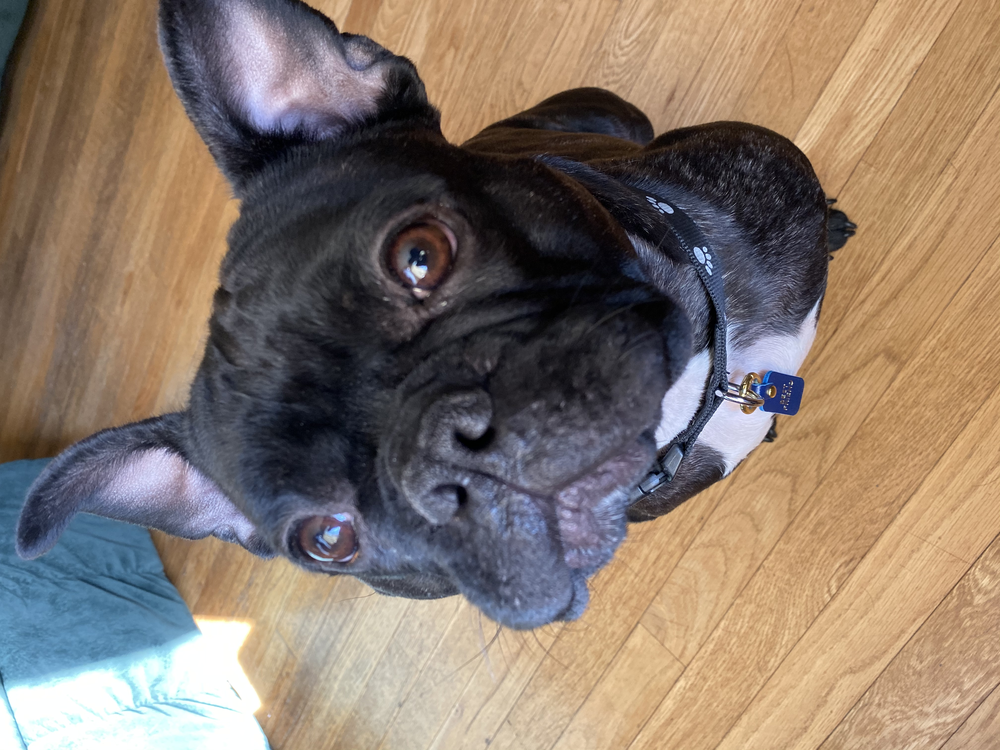
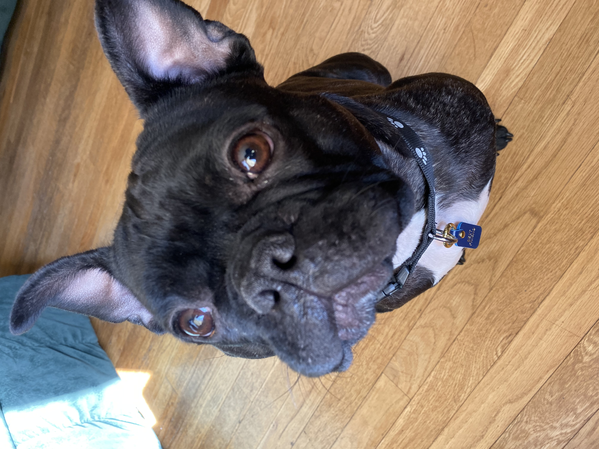

My Frenchie Jax
 

Hello this is a picture of my dog Jax and he is a French Bulldog. He was originally born in Bulgaria and his puppy name was "Andijio". For a year he was living with a military family stationed in Germany, about an hour away from where I was in Germany, at the time. That family are the ones who renamed my dog Jax, but I was lucky to find him up for adoption! He's lived with me for over 2 years now and is the best sidekick I could have ever asked for! He's been on quite an adventure since I have gotten him, since I am in the Military he has traveled a lot with me. He's got to explore cities in Germany, and Poland. He moved to the states to New Hampshire and just recently completed a move to Washington State! I've learned so much about owning French Bulldogs and that's what made me create this site to help others learn about the breed to see if a French Bullgdog is right for you!